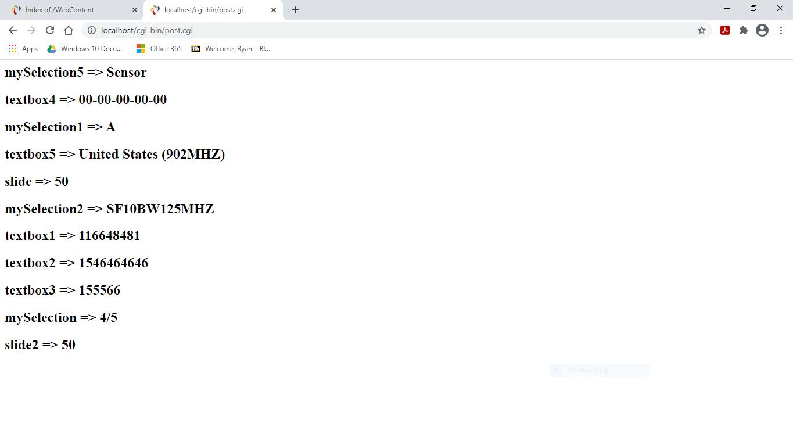

Description
The main purpose of this project was to practice HTML and CSS. In addition to structuring the text fields and name value pairs, a php script was used print the parameters after they are entered in each field. These values were entered on a hypothetical basis for the LoRa physical layer and LoRaWAN medium access control sublayer. The output shows these defined settings.
OUTPUT
 The Eclipse IDE was used to deploy the HTML page on the left. It takes 11 parameters to simulate a IoT device
When the user is done defining the settings they simply click the save changes button in order to print out the values from the input elements.
The Eclipse IDE was used to deploy the HTML page on the left. It takes 11 parameters to simulate a IoT device
When the user is done defining the settings they simply click the save changes button in order to print out the values from the input elements.
The screen shot on the right shows the final output using the post.cgi script to print out the values that were previously inputted. This script was written in php and is responsible for printing out each name value pair. This project was part of an assignment from a web development class that I enjoyed very much!